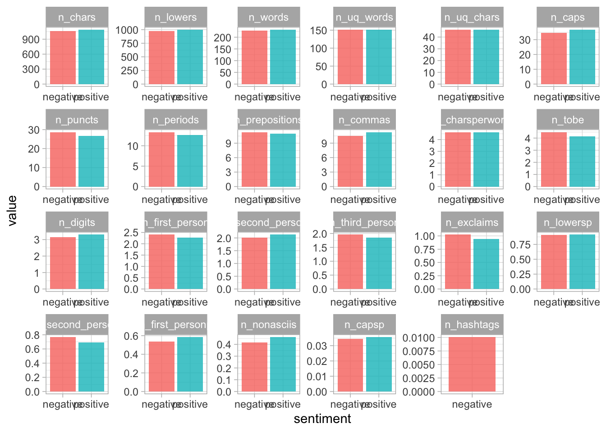

In this NLP project I will be attempting to classify IMDB Movie Reviews into a positive and negative sentiment categories based off the text content in the reviews. This dataset is publicly available at kaggle.
Each observation in this dataset is a review of movies. The sentiment column is the category of those reviews as positive and negative, and review column is the text review by customers.
Data set preparation and pre-processing
I downloaded the dataset from Kaggle to my personal computer and read the IMDB Dataset.csv to the project environment.
Load Libraires
library(tidyverse) # general data preparation
── Attaching core tidyverse packages ──────────────────────── tidyverse 2.0.0 ──
✔ dplyr 1.1.2 ✔ readr 2.1.4
✔ forcats 1.0.0 ✔ stringr 1.5.0
✔ ggplot2 3.4.2 ✔ tibble 3.2.1
✔ lubridate 1.9.2 ✔ tidyr 1.3.0
✔ purrr 1.0.1
── Conflicts ────────────────────────────────────────── tidyverse_conflicts() ──
✖ dplyr::filter() masks stats::filter()
✖ dplyr::lag() masks stats::lag()
ℹ Use the conflicted package (<http://conflicted.r-lib.org/>) to force all conflicts to become errors
library(tidytext) # text modelinglibrary(tidylo) # words log odds ratiolibrary(tvthemes) # tweak default ggplot2 themes and font styleslibrary(textfeatures) # for text featurestheme_set(theme_light())# themelibrary(tidymodels) # tidyverse ecosystem for building models
Let’s check the head, info, describe methods on imdb_review data.
head(imdb_review)
# A tibble: 6 × 2
review sentiment
<chr> <chr>
1 "One of the other reviewers has mentioned that after watching just … positive
2 "A wonderful little production. <br /><br />The filming technique i… positive
3 "I thought this was a wonderful way to spend time on a too hot summ… positive
4 "Basically there's a family where a little boy (Jake) thinks there'… negative
5 "Petter Mattei's \"Love in the Time of Money\" is a visually stunni… positive
6 "Probably my all-time favorite movie, a story of selflessness, sacr… positive
glimpse(imdb_review)
Rows: 50,000
Columns: 2
$ review <chr> "One of the other reviewers has mentioned that after watchin…
$ sentiment <chr> "positive", "positive", "positive", "negative", "positive", …
summary(imdb_review)
review sentiment
Length:50000 Length:50000
Class :character Class :character
Mode :character Mode :character
Let’s create a new column called Review Length which is the number of words in the review column.
The above words make sense for the positive and negative sentiment of the movie reviews. The data frame contains some html tags and I would like to see how this is structured. I will use the textfeatures package for this task. And let’s explore by creating text features from review column.
NLP Classification Task
Let’s move on the actual task. I will use the textfeatures package to get extra features for the review text.textfeatures requires a column that needs to be transformed the name would would be changed to text.
# text-feature looking one column to be named as text text_feature <-textfeatures( imdb_review %>%mutate(text = review), sentiment =FALSE,word_dims =0,normalize =FALSE,verbose =FALSE)text_feature %>%bind_cols(imdb_review) %>%group_by(sentiment) %>%summarise(across(starts_with("n_"), mean)) %>%pivot_longer(starts_with("n_"), names_to ="text_feature") %>%filter(value >0.01) %>%mutate(text_feature =fct_reorder(text_feature, -value)) %>%ggplot(aes(x = sentiment, y = value, fill = sentiment)) +geom_col(position ="dodge", alpha =0.8, show.legend =FALSE)+facet_wrap(~text_feature, scales ="free", ncol =6)

This is very interesting with hash tags related reviews are negative sentiments.
Build a model
Data split
A dataset used for machine learning should be partitioned into three subsets — training, test, and validation sets.
I will split the data set 75% for training and the remaining 25% for test dataset.
Cross-validation. Cross-validation is the most commonly used tuning method. It entails splitting a training dataset into ten equal parts (folds). A given model is trained on only nine folds and then tested on the tenth one (the one previously left out). Training continues until every fold is left aside and used for testing. As a result of model performance measure, a specialist calculates a cross-validated score for each set of hyperparameters. A data scientist trains models with different sets of hyperparameters to define which model has the highest prediction accuracy. The cross-validated score indicates average model performance across ten hold-out folds. During this stage, a data scientist trains numerous models to define which one of them provides the most accurate predictions.
Next, let’s prepocess out data to get it ready for modeling.
library(textrecipes)library(themis)imdb_rec <-recipe(sentiment ~ review, data = imdb_train) %>%step_textfeature(review) %>%# create text features using a step from the textreceip packagestep_zv(all_predictors()) %>%# filter for zero variance all predictorsstep_normalize(all_predictors()) # center and scale all predictor variablesimdb_prep <-prep(imdb_rec)imdb_prep
After a data scientist has preprocessed the collected data and split it into subsets, he or she can proceed with a model training. This process entails “feeding” the algorithm with training data. An algorithm will process data and output a model that is able to find a target value (attribute) in new data an answer you want to get with predictive analysis. The purpose of model training is to develop a model.
Let’s start by creating the two different models, a random forest and SVM(support vector machine).
# model specificationsrf_spec <-rand_forest(trees =1500) %>%set_engine("ranger") %>%# set the engine ranger r package a core computational engineset_mode("classification") # set the type of model classification or regressionrf_spec
Random Forest Model Specification (classification)
Main Arguments:
trees = 1500
Computational engine: ranger
The goal of this step is to develop the simplest model able to formulate a target value fast and well enough. A data scientist can achieve this goal through model tuning. That’s the optimization of model parameters to achieve an algorithm’s best performance. One of the more efficient methods for model evaluation and tuning is cross-validation.